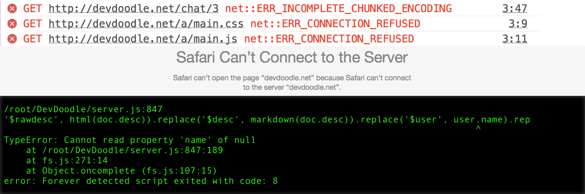

Web Development

Learn how to build a website with HTML, CSS, and JavaScript. You will:
- Build an accessible news site
- Make it beautiful with CSS
- Make interactive widgets with JavaScript
Server-side JavaScript

Learn how to use Node.js and Mongodb to power a web server. You will:
- Build a simple server
- Let it serve static files and handle errors
- Build an authentication system
- Create a mongodb chat app
Debugging

Learn how to fix errors in your code by yourself!
- Use logs, stack traces, and breakpoints
- Learn how to rubber-duck debug
- Make a minimal, self-contained, complete example from long complex code